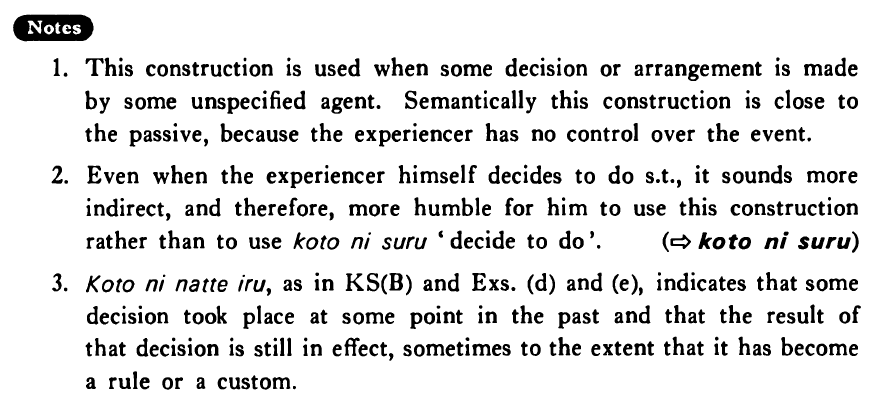

←
DoJG
→
ことになる
(B. 202)
Example sentences
().
私は来年大阪に転勤する
ことになった・なりました
。
I'm going to be transferred to Osaka next year.
().
日本では車は道の左側を走る
ことになっている・います
。
In Japan cars are supposed to be driven on the left side of the street.
().
私は来月から会社に勤める
ことになりました
。
It has decided that I will be employed at a company beginning next month.
().
多分ジャンセンさんは日本で英語を教える
ことになる
でしょう。
Perhaps it will turn out that Mr. Jansen will teach English in Japan.
().
来年六月に結婚する
ことになりました
。
It's been arranged that I will get married next June.
().
スミスさんは日本で英語を教える
ことになっている
。
Mr. Smith is supposed to teach English in Japan.
().
今日山田先生に会う
ことになっています
。
Today (it's been arranged that) I'm seeing Professor Yamada.
Formation
Vinformal nonpast
ことに
{
なる
/
なった
}
話す
ことに
{
なる
/
なった
}
It will be decided/it has been decided that someone will talk
食べる
ことに
{
なる
/
なった
}
It will be decide/it has been decided that someone will eat
